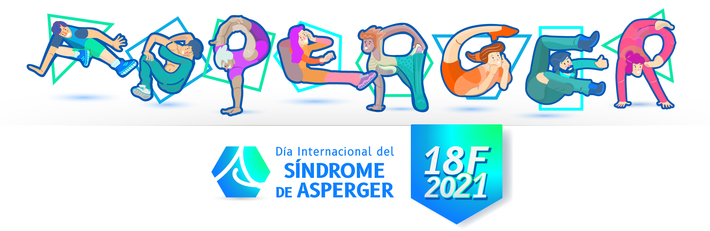

Hoy particularmente no vamos a aprender sobre Linux, tampoco sobre tecnología. Hoy quisiera unos minutos para hablar sobre Asperger
Intro
Qué es el Asperger?
El Sindrome de Asperger es un trastorno del desarrollo que lleva asociada una alteración neurobiológica, manifestando un conjunto de características mentales y de conducta que forma parte de los trastornos del espectro autista. Es algo que nos acompaña toda la vida.
Breve historia
El término fue utilizado por primera vez por Lorna Wing en 1981 en una revista de psiquiatría y psicología, y lo denominó así en reconocimiento del trabajo previo de Hans Asperger, psiquiatra y pediatra austríaco que ya había descrito el síndrome en 1943. El reconocimiento internacional del síndrome de Asperger como una entidad clínica se dio en la década de 1990, y se incorporó por primera vez en el Manual diagnóstico y estadístico de los trastornos mentales, en su cuarta edición (DSM-IV, de 1994), es decir, cincuenta años después de que Asperger publicara por primera vez sus consideraciones acerca del trastorno.
La descripción que realizó Asperger en 1943 se basaba en cuatro casos clínicos de niños que fueron sus pacientes, los cuales tenían dificultades para integrarse socialmente. Estos niños carecían de habilidades de comunicación no verbal, no podían demostrar empatía con sus compañeros y eran, ciertamente, torpes físicamente. Asperger describió la “psicopatía autista” diciendo que se caracterizaba sobre todo por un aislamiento social.
A diferencia de la descripción que el mismo Asperger hizo en su tiempo de la psicopatía autista, en la que resaltaba su capacidad cognitiva superior, hoy se describe el síndrome de Asperger en personas que no presentan déficit de inteligencia, y se considera que esta puede hallarse en la media o por encima.

Caracteristicas del Asperger
- Interacción social y afectividad:
- No sabe demostrar cuándo le interesa una persona.
- Relaciones sociales muy limitadas, en los niños o adolescentes torpe interacción con sus compañeros.
- Ingenuidad, testarudez y credulidad.
- Intereses restringidos y repetitivos:
- Intereses e inquietudes muy acotados o circunscriptos que persigue obsesivamente pero en soledad, como por ejemplo, la recolección de datos o cifras obsesivamente sin ningún valor práctico o social.
- El individuo con SA se convierte en un egocéntrico cuya vida se caracteriza por una rutina rigurosa, sistemática y cuyo mundo se podría reducir, por ejemplo, a los horarios de los trenes o la colección de sellos.
- Lenguaje y discurso:
- Lenguaje formal, pomposo o pedante, con dificultades para captar un significado que no sea literal.
- Problemas de comunicación con los demás, poca preocupación por la respuesta del otro.
- Falta de comunicación no verbal, impasibilidad, evitar mirar a los ojos del interlocutor.
- Hablar con una voz extraña, monótona o de volumen muy fuerte.
- Falta de conocimiento de los límites y de las normas sociales.
- Actos ritualizados:
- Rutinas y rituales muy poco usuales que no soportan el menor cambio pues esto genera inmediatamente una ansiedad insoportable.
- Desarrollo motor: a menudo se observa un retraso en el desarrollo motor y torpeza en la coordinación motriz.
Cualquier desarrollo de un interés, a diferencia del resto de la población, se disfruta exclusivamente en soledad. El síndrome puede llegar a distorsionar de tal manera las relaciones sociales de la persona con SA y sus compañeros o familia que éstos pueden sentirse enfurecidos por estar frente a una persona insensible, centrada en sí misma y con una rigidez inflexible
Para más detalles sobre estas caracteristicas te recomiendo investigar cada punto en detalle sobre el Asperger
Como he vivido con Asperger
Principalmente, me gustaría aclarar que he descubierto que tengo asperger no hace mucho tiempo atrás. Hace apróximadamente un año (2020) descubrí lo que era realmente el Asperger, y resulta que el 98% de las características coincidían. Pero no un poco, más bien todas. Así que decidí investigar, y luego de conversar con un profesional, descubrir que tengo Asperger.
Mi infancia y adolescencia
La infancia fue una de las etapas más dificiles de vivir. Siempre fui un chico muy solitario, de pasar mucho tiempo dentro de mis pensamientos. Mis padres y hermanos siempre criticaron mi manera de ser, mi manera de ver la vida. Ya que desde ese entonces no me preocupaba absolutamente nada en lo referente a cualquier otra persona. Incluyendo mi propia familia. No fui un niño con muchos amigos, entablar una amistad era algo demasiado dificil. Sufrí muchísimo de bullying, aunque en aquella epoca, en mí país, esa palabra no era tan conocida o popular. Tenía mucha imaginación. Era muy creativo. Pero la falta de contacto con otras personas preocupaba demasiado a mis padres. A tal punto que insistían demasiado en que sociabilizara.
Obviamente, todo eso terminaba provocándome mucha frustración. A cualquier lugar que iba, me sentía el “bicho raro” del lugar. Jugué mucho tiempo al basquet, lo que me ayudó a entablar relaciones personales. Pero jamás una amistad con alguien. De hecho siempre era de aclararle a las personas, de forma brusca y soberbia, que ninguno de ellos era mi amigo, y que jamás iban a serlo.
Uno de los recuerdos que siempre le cuento a las personas, es que de tanto que mis padres insistian en que fuera “normal”, practiqué frente a un espejo durante mucho tiempo (meses) como sonreir. Ya que no era de las personas que sonreían con frecuencia. Solo me hago reir a mi mismo, es muy dificil que otra persona me haga reir.
Tenía esa manía de practicar “ser una personal normal”. Como sonreir, saludar, entablar una conversación, interesarme por temas de otras personas. Fingir. Más que nada fingir. A día de hoy, puede ser que suene una persona totalmente falsa, pero soy de fingir muchisimo en lo que hago. Una reunión de amigos, una salida afuera, ver gente…
Bueno resumiendo mi adolescencia fue horrible. Todo el tiempo fingiendo ser lo que no deseaba ser. Sinceramente, se vive muy dificil de esta manera, pero si no lo haces la gente realmente te ve como un “bicho raro”. Más que nada en Argentina.
Juventud y adultez
En mi adolescencia/juventud (de mis 13 a 18 años). Me dediqué a consumir algunas drogas. No es culpa de terceros, más bien el tonto soy yo. Pero lo razón para hacerlo era que “fue la manera más sencilla” de encajar con la gente.
Era simple, me convertí en un “rastafari” con el fin de tener “amigos”. Hasta que un día todo explotó (18 años). Se armó un lío grande y terminé en escapándome de mi casa por todos los líos que tenía en mi cabeza y en la vida. Al escaparme, reduciendo un poco la historia, terminé en una comisaría en la cual, me habló un comisario, de Jesús.
Admito que nunca me interesó, antes, Jesús. Jamás creí en nada hasta ese entonces. Hoy puedo decir que aquel día escuche realmente la voz de Dios. No voy a hablar de religión de todas formas porque no es el fín. Pero es una etapa que me ayudó muchisimo.
NOW!
El ahora. Desde el 7 de Octubre del 2013, voy a una iglesia. El día 21 de Abril del 2014 conocí a quien actualmente es mi esposa (Sol), el día 21 de Abril del 2016 me casé. Y hasta día de hoy convivimos muy felizmente.
No es fácil vivir con Asperger. Mi esposa día a día sigue acostumbrándose. Yo al mismo tiempo sigo acostumbrándome a las personas, a la convivencia, a relacionarme con la gente. Pero se puede vivir comodamente. Hay días que tengo pensamientos feos, pero luego se pasan con la ayuda de mi Esposa!